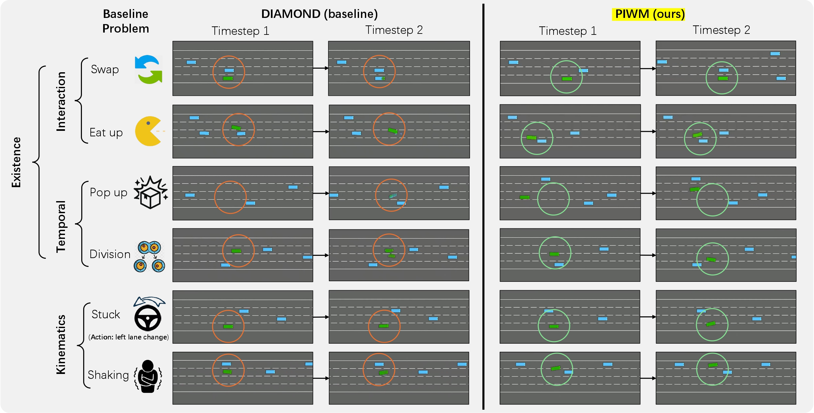
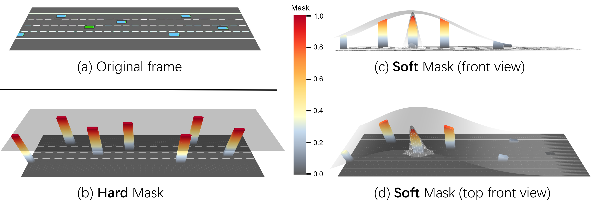

On a run and want to get a gist of our paper? Listen to the following podcast!

A major challenge in deploying world models is the trade-off between size and performance. Large world models can capture rich physical dynamics but require massive computing resources, making them impractical for edge devices. Small world models are easier to deploy but often struggle to learn accurate physics, leading to poor predictions. To address this, we propose the Physics-Informed BEV World Model (PIWM), a compact model designed to efficiently capture physical interactions in bird’s-eye-view (BEV) representations. PIWM incorporates a Soft Mask mechanism during training to improve dynamic object modeling and future prediction. We also introduce a simple yet effective inference technique called Warm Start, which enhances prediction quality even in zero-shot settings. Experiments demonstrate that, at the same parameter scale (400M), PIWM surpasses the baseline by 60.6% in weighted overall score. Moreover, even when compared to the largest baseline model (400M), the smallest PIWM variant (130M with Soft Mask) achieves a 7.4% higher weighted overall score while delivering 28% faster inference speed.
On a run and want to get a gist of our paper? Listen to the following podcast!

This viewer is interactive — drag to rotate, scroll to zoom. TopFront 45° button to reset.
Check out what the Genie 3 creators say in interview, timestamp 25:25: How Do You Measure the Quality of a World Model?
@misc{anonymous,
title={Enhancing Physical Consistency in Lightweight World Models},
author={Anonymous Author(s) for now},
year={2025},
eprint={2509.12437},
archivePrefix={arXiv},
primaryClass={cs.AI},
url={https://arxiv.org/abs/2509.12437},
}
}